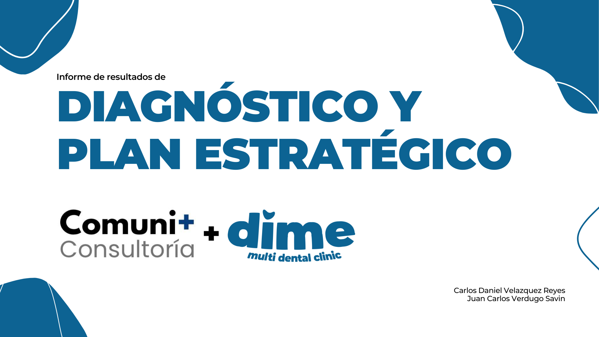
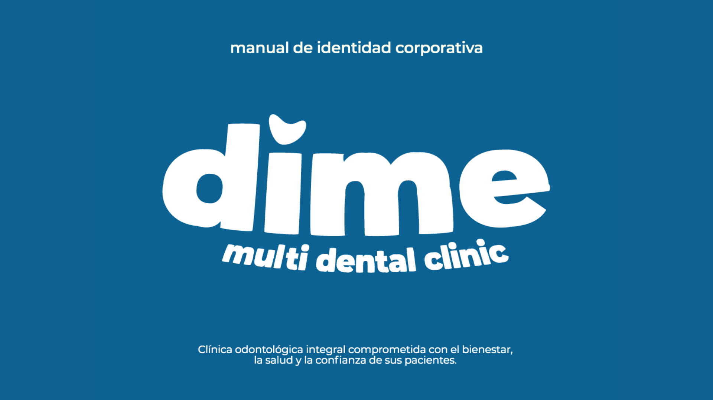
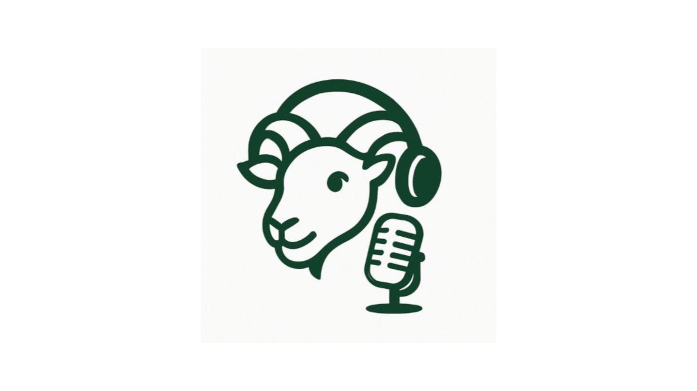
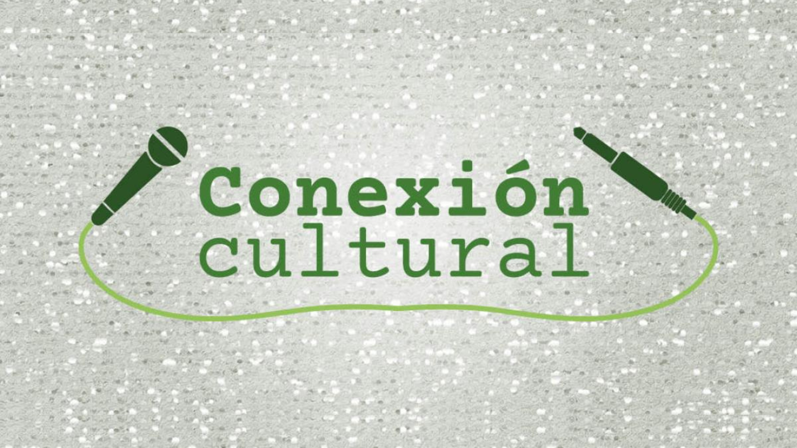
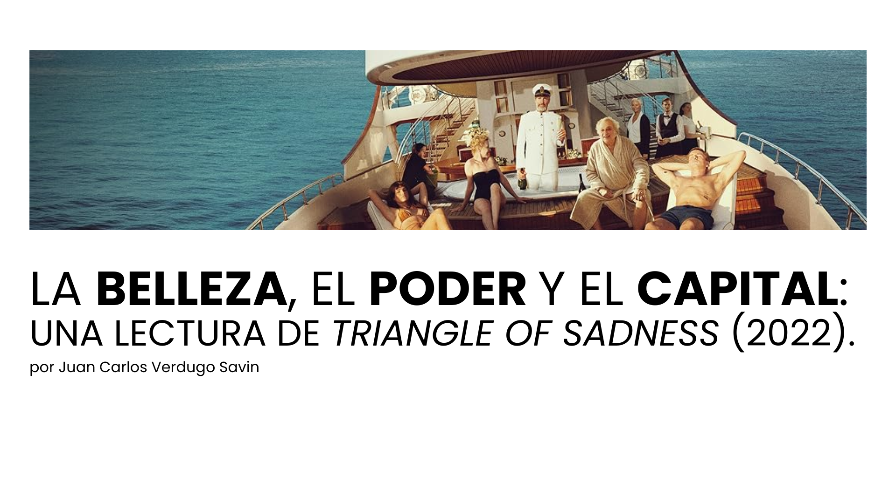

Soy estudiante de Ciencias de la Comunicación en la UABC. Me interesa explorar distintas áreas del campo, desde el periodismo social y cultural, hasta la comunicación interna en organizaciones, la producción audiovisual y las estrategias de contenido digital.
Intereses
Periodismo social y de datos
Comunicación interna y cultura organizacional
Producción de video y audio
Estrategias digitales y gestión de contenidos
Principales aptitudes
Estrategia de contenidosGestión de redes socialesEdición de vídeoProducción audiovisualCuraduría de contenidos
Galería
‹
›

Consultoría de comunicación estratégica.
Diagnóstico integral y estrategia de comunicación.

Rediseño de Manual de identidad corporativa.
Construcción de identidad visual y lineamientos de marca.

Prototipo de podcast universitario.
Desarrollo de concepto y pre-producción del piloto.

Colaboración en programa de radio.
Producción y edición de contenido de segmento del programa.
Comunicación: Un campo y un mercado complejos.
Reportaje de investigación sobre el ejercicio profesional.

La belleza, el poder y el capital.
Lectura crítica de la película “The Triangle of Sadness”.
Realicé un diagnóstico integral de comunicación y propuse una estrategia enfocada en optimizar canales, claridad de mensajes y participación del personal. El proyecto incluyó análisis de procesos internos y recomendaciones prácticas para mejorar la comunicación organizacional.
Rediseñé la identidad corporativa de la organización, construyendo una guía de marca coherente y funcional. El manual incluye tipografía, paleta de color, aplicaciones del logotipo y papelería.
Colaboración en diseño de prototipo de podcast universitario.
Desarrollador de Contenido.
Colaboré en el desarrollo de un prototipo de podcast universitario, definiendo concepto, línea editoria y estructura de episodios. Realicé pre-producción del piloto incluyendo diseño de guiones y secciones del programa.
Contribuí en la producción y edición de un segmento de programa de radio, participando en todas las fases de producción: planificación de contenido, grabación, edición de audio, selección musical, efectos de sonido y redacción de guion drámatico.
Reportaje: Comunicación, un campo y un mercado complejos.
Reportero investigador.
Colabore en un reportaje de investigación sobre el ejercicio profesional en Comunicación, enfocándome en egresados de la UABC en Tijuana y su inserción laboral. El trabajo incluyó entrevistas, análisis de datos de instituciones oficiales (IMCO, UABC) y revisión de tendencias en marketing, periodismo y comunicación institucional.
Colabore en un análisis crítico de la película “The Triangle of Sadness”, explorando cómo los conceptos de belleza, poder y capital se articulan en la narrativa audiovisual y en la representación social.
Árticulo: El oficio del diseño desde la comunicación.
Redactor.
A partir de una entrevista en profundidad con la profesora Christian Vargas, desarrollé un artículo que explora la intersección entre diseño y comunicación.

.png)
.jpg)